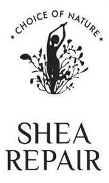

Trade Mark Journal No.2025/049 5 December 2025
UK00004298636 21 November 2025 (3,5)

- Class 3
- Shea butter for cosmetic purposes, bar soap, bath soap, beauty soap, cosmetic soap, natural soap bars, skin soap, soaps for body care, soaps made from shea butter, body oil, castor oil for cosmetic purposes, coconut oil for cosmetic purposes, cosmetic oils, cosmetic olive oil for the face and body, oils for cosmetic purposes, aloe vera oil for cosmetic purposes, avocado oil for cosmetic purposes; toilet preparations; preparations for the care of the skin, scalp and the body; preparations for toning the body; skin cleansers; dermatological preparations and substances [other than medicated]; perfume, eau de cologne, toilet water; talcum powder; gels, foam and salts for the bath and the shower; soaps; body deodorants; cosmetics; creams, milks, lotions, gels and powders for the face, the body and the hands; sun care preparations; make-up preparations; aftershaves; shaving foams and creams; preparations for the hair; shampoo; hair lacquers; hair colouring and hair decolorant preparations; permanent waving and curling preparations; essential oils for personal use; dentifrices; anti-perspirants; deodorants for personal use; skin lightening preparations; skin brightening preparations; non-medicated skin serum; moisturiser; shea butter; moisturizing preparations for the skin; skin and body topical lotions, creams and oils for cosmetic use; skin conditioning creams for cosmetic purposes; skin cream; skin lotion; skin moisturizer.
- Class 5
- Pharmaceutical and veterinary preparations; sanitary preparations for medical purposes; medicated lotions for face and skin; mediated skin care preparations; medicated skin care preparations, namely, creams, lotions, gels, toners, cleaners and peels; plasters; materials for dressings; medicinal, homeopathic, allopathic, ayurvedic, remedial and dietetic preparations and substances; vitamins and nutrients; medicated toilet preparations and substances; medicated skin and hair preparations and substances; skin lightening preparations and substances; mineral supplements; herbal preparations and substances; herbal remedies; herbal supplements and herbal extracts; vitamins, vitamin preparations; minerals, mineral preparations; vitamin and mineral food supplements; food supplements.
Choice of Nature Limited
Representative: Beck Greener LLP